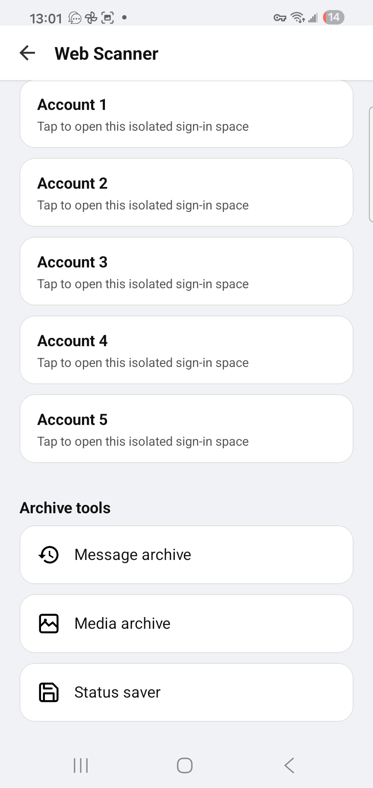
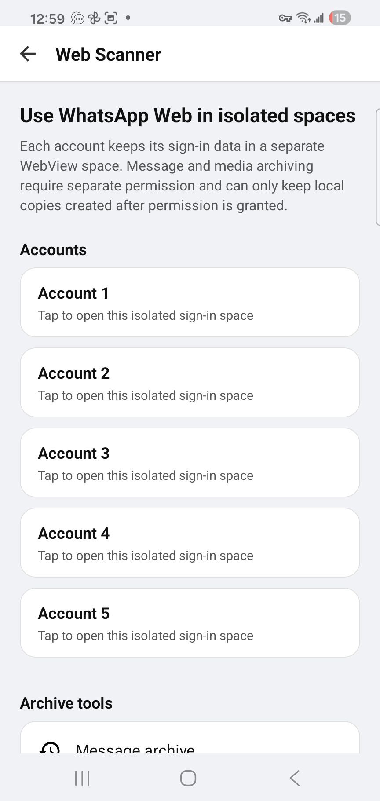
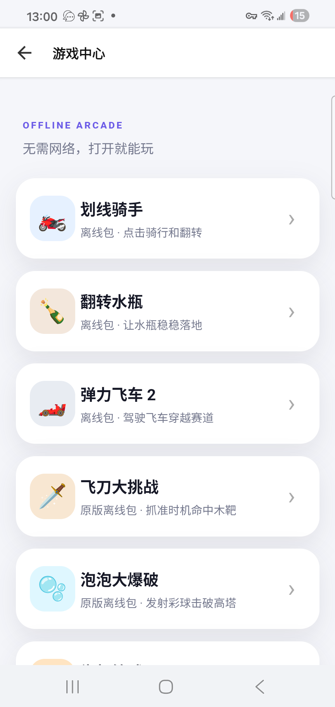

Multi-tab browsing
Browse, switch tabs, restore pages, find text and request desktop sites.
WhatsApp Web companion for Android
Open the official WhatsApp Web service in separate sign-in spaces. Switch accounts quickly, keep permitted messages and media locally, and share saved files when you choose.


Built around the official WhatsApp Web service
WhatsApp Web, made practical
Each account uses its own WebView storage, so its WhatsApp Web sign-in stays separate from the others. Add a local label, switch in a tap, and choose either the mobile chat layout or the basic web layout.
SiBrowser does not bypass WhatsApp security or end-to-end encryption. Account linking is completed through the methods provided by WhatsApp Web.
Get connected
Open one of the isolated account spaces in Web Scanner.
Use the QR code or phone-number method shown by WhatsApp Web.
Use WhatsApp Web, then move between your signed-in spaces quickly.
Keep and share what matters
SiBrowser can keep local copies of future WhatsApp notification text and show media or status files already saved on your device. Nothing is recovered from a WhatsApp server.
Save new WhatsApp notification text after notification access is granted.
Choose the WhatsApp Media folder to view and save available files.
Share selected webpages, downloads, images, videos, audio and documents through Android.
Local archive tools and account spaces 3–5 require Web Scanner Pro.
More than WhatsApp Web
Browse, switch tabs, restore pages, find text and request desktop sites.
Pause, resume, rename, organize and share downloaded files.
Translate visible page text without leaving the site you are reading.
Download lightweight game packs once and play later without loading a webpage.
One home screen
Web Scanner and Game Center have their own clear entry points, while everyday browsing remains fast and familiar.

More from Beason Apps
Explore our other Android apps for multiple accounts and practical PDF work.
Clone supported Android apps and keep multiple accounts in separate private spaces.
Write, highlight, annotate and sign PDF documents with natural handwriting.
Available on Android
Install the Google Play version to use Web Scanner, isolated account spaces and offline games.
The direct APK is the separate SiMontok browser edition and does not include Web Scanner or Game Center.